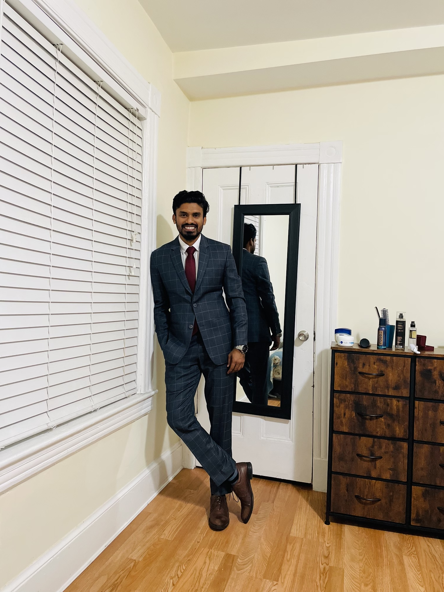

Hello,
I am Shifat Haider Al - Amin (Shifu), a 3rd year PhD student at Computer & Information Science Department at UMass Lowell . I am working under the supervision of Prof. Ruizhe Ma . To me life is a big mystery where each day comes up with a new challenge and each challenge beautify the curvature of our life. The more it gets enriched by the experience, the more we will be exposed the depth of life. It's a tremendous journey indeed. In other words, life becomes a poetry if you embark yourself within it. Hence, being the lover of poem, I do believe Poem, Prayers, & Promises stay together. Sigh!
I am Shifat Haider Al - Amin (Shifu), a 3rd year PhD student at Computer & Information Science Department at UMass Lowell . I am working under the supervision of Prof. Ruizhe Ma . To me life is a big mystery where each day comes up with a new challenge and each challenge beautify the curvature of our life. The more it gets enriched by the experience, the more we will be exposed the depth of life. It's a tremendous journey indeed. In other words, life becomes a poetry if you embark yourself within it. Hence, being the lover of poem, I do believe Poem, Prayers, & Promises stay together. Sigh!
Research Interests:
- Time Series Analysis
- Computer Vision
- Machine Learning
- Deep Learning
- Artificial Intelligence
- Multivarite Time Series Analysis